철도신호기사 (2016-10-01 기출문제)
1과목: 전자공학
1. 진폭 변조도를 m이라 할 때 m＞1이 되면 변조 일그러짐이 일어나는데 이를 무엇이라 하는가?
- 양변조
- 음변조
- 과변조
- 고전력변조
(정답률: 96%)

2. 다음 논리 회로의 출력(Y)은?
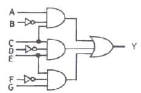
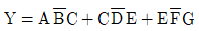
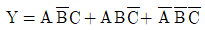
- Y=A+B+C+D+E+F+G
- Y=ABCDEFG
(정답률: 90%)
3. 주파수 변조(FM)에서 신호대 잡음비(S/N)를 향상시키기 위한 방법으로 거리가 먼 것은?
- 디엠파시스(de-emphasis)회로를 사용한다.
- 주파수 대역폭을 넓힌다.
- 주파수 변조지수 mf를 크게 한다.
- 증폭도를 크게 높인다.
(정답률: 62%)
4. 다음 그림과 같은 회로의 용도는?
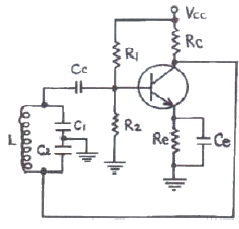
- 동조형 고주파 증폭기
- 하틀리 발진기
- 콜피츠 발진기
- 부궤환 증폭기
(정답률: 72%)
5. LC 발진회로의 주파수 안정도를 높이기 위한 방법으로 적합한 것은?
- 바이어스를 걸어준다.
- 동조회로의 선택도 Q를 높인다.
- 동조회로의 공진주파수를 높인다.
- 동조회로의 R 성분을 키운다.
(정답률: 67%)
6. 다음 카르노 맵을 간략화한 결과는?
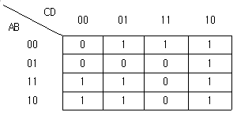
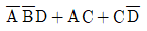
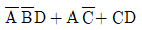
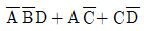
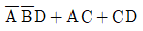
(정답률: 87%)
7. 다음 회로의 안정계수를 구하면? (단, +VCC=10V, R1=3kΩ, R2=2kΩ, β=100, Re=3kΩ, Rc=3kΩ이다.)
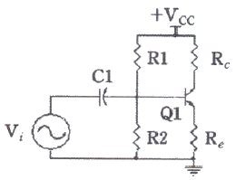
- 10
- 1.4
- 2.45
- 101
(정답률: 48%)
8. 고정 바이어스 회로에서 베이스 저항이 420kΩ, 콜렉터 저항이 2kΩ, β가 90일 때 안정계수(S)는?
- 12
- 25
- 50
- 91
(정답률: 77%)
9. 다음 중 R-L-C 직렬공진 회로의 선택도(Q)는? (단, ωr은 공진 각주파수이다.)
- L/CR
- ωrL/R
- 1/ωrC
- √C/L
(정답률: 89%)
10. 전원 주파수 60Hz를 사용하는 정류회로에서 120Hz의 맥동 주파수를 나타내는 회로 방식은?
- 단상 반파 정류
- 단상 전파 정류
- 3상 반파 정류
- 3상 전파 정류
(정답률: 84%)
11. 푸시풀(Push Pull)증폭회로에 대한 설명으로 거리가 먼 것은?
- 비교적 출력이 크다.
- 전원 전압에 포함된 험(hum)이 상쇄된다.
- 출력전력이 주어진 경우 일그러짐이 커진다.
- 우수차의 고조파는 서로 상쇄되어 출력에 나타나지 않는다.
(정답률: 10%)
12. 맥류에서 교류성분은 제거하고 직류성분만 선택하는 회로는?
- 평활 회로
- 정류 회로
- 맥류 회로
- 증폭 회로
(정답률: 89%)
13. 수정발진기에서 안정된 발진을 계속하기 위한 수정의 임피던스는 어떻게 되어야 하는가?
- 용량성이어야 한다.
- 저항성이어야 한다.
- 유도성이어야 한다.
- 저항성과 용량성이어야 한다.
(정답률: 73%)
14. 그림과 같은 연산 회로의 명칭으로 옳은 것은?
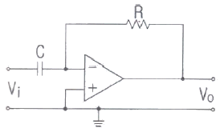
- 이상기
- 적분기
- 미분기
- 가산기
(정답률: 91%)
15. 변조 신호주파수 400Hz, 전압 3V로 주파수를 변조하였을 때 변조지수가 50이었다. 이때 최대 주파수 편이는 몇 kHz인가?
- 20
- 50
- 120
- 300
(정답률: 63%)
16. 그림과 같은 회로의 논리 게이트는?
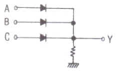
- AND
- NAND
- NOR
- OR
(정답률: 65%)
17. 다음 논리식을 불대수 기본 법칙을 이용하여 간단하게 표현한 것은?
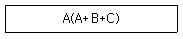
- AB
- B
- A+B+C
- A
(정답률: 77%)
18. 진폭변조파의 전압이 e=(100+20sin2π200t)sin2π105t[V]로 표시되었을 때 점유주파수 대역폭(Hz)은?
- 100
- 200
- 300
- 400
(정답률: 39%)
19. 윈 브릿지(Wien Bridge) 발진회로에서 발진주파수(Hz)는?
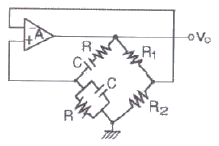
- RC/2π2
- 1/2πRC
- 1/πR2
- 1/πRC
(정답률: 78%)
20. 전력증폭기의 출력측 기본파 전압이 50V, 제2 및 제3고조파 전압이 각각 4V, 3V일 때 왜율(%)은?
- 10
- 20
- 30
- 40
(정답률: 75%)
2과목: 회로이론 및 제어공학
21. RL 직렬회로에서 다음과 같은 전압을 인가할 때 제3 고조파 전류의 실효값은 약 몇 A인가? (단, R=3Ω, ωL=4Ω이다.)
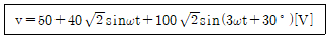
- 2
- 4
- 8
- 10
(정답률: 77%)
22. 선로의 임피던스 Z=R+jωL(Ω), 병렬 어드미턴스가 Y=G+jωC(S)일 때 선로의 저항 R과 컨덕턴스 G가 동시에 0이 되었을 때 전파정수는?
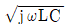
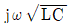
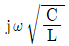
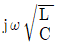
(정답률: 29%)
23. 정상상태에서 t=0인 순간 스위치 S를 열면 이 회로에 흐르는 전류 i(t)는?
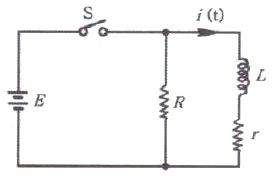
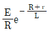
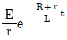
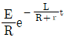
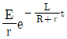
(정답률: 69%)
24. 어떤 회로망의 4단자 정수 중에서 A=8, B=j2, D=3+j2이면 이 회로망의 C는?
- 24+j14
- 8-j11.5
- 4+j6
- 3-j4
(정답률: 64%)
25.
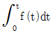
를 라플라스 변환하면?- s2F(s)
- sF(s)
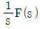
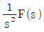
(정답률: 59%)
26. 각 상의 전류가 다음과 같을 때 영상 대칭분 전류(A)는?
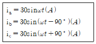
- 10sinωt
- 30sinωt
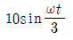
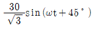
(정답률: 56%)
27. 다음 회로에서 a-b 사이의 단자전압 Vab(V)는?
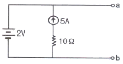
- +2
- -2
- +5
- -5
(정답률: 50%)
28. 다음 회로의 A-B 간의 합성 임피던스 Z0는?
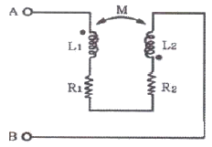
- R1+R2+jwM
- R1+R2-jwM
- R1+R2+jw(L1+L2+2M)
- R1+R2+jw(L1+L2-2M)
(정답률: 83%)
29. 대칭 12상 교류 성형(Y)결선에서 상전압이 50V일 때 선간전압은 약 몇 V인가?
- 86.6
- 43.3
- 28.8
- 25.9
(정답률: 50%)
30. 3개의 같은 저항 RΩ을 그림과 같이 Δ결선하고, 기전력 V(V), 내부저항 r(Ω)인 전지를 n개 직렬 접속했다. 이때 전지 내에 흐르는 전류가 I(A)라면 저항 R(Ω)은?
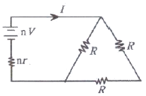
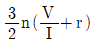
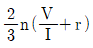
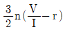
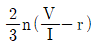
(정답률: 17%)
31. 그림과 같은 신호 흐름선도의 전달함수는?(오류 신고가 접수된 문제입니다. 반드시 정답과 해설을 확인하시기 바랍니다.)
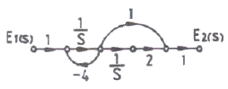
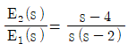
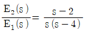
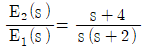
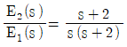
(정답률: 39%)
32. 전자계전기를 사용할 때 장점이 아닌 것은?
- 온도특성이 양호하다.
- 접점의 동작속도가 빠르다.
- 과부하에 견디는 힘이 크다.
- 동작상태의 확인이 용이하다.
(정답률: 48%)
33. 주어진 계통의 특성방정식이 s4+6s3+11s2+6s+K=0이다. 안정하기 위한 K의 범위는?
- K ＜ 20
- 0 ＜ K ＜ 20
- 0 ＜ K ＜ 10
- K ＜ 0, K ＞ 20
(정답률: 67%)
34. 그림과 같은 보드 선도를 갖는 계의 전달함수는?
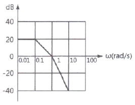
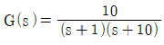
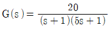
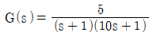
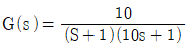
(정답률: 69%)
35. G(s)=e-Ls에서 ω=100rad/s일 때 이득(dB)은?
- 0
- 20
- 30
- 40
(정답률: 28%)
36.
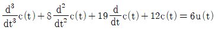
의 미분방정식을 상태방정식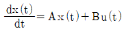
로 표현할 때 옳은 것은?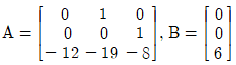
(정답률: 69%)
37. 제어량을 어떤 일정한 목표값으로 유지하는 것을 목적으로 하는 제어법은?
- 추종제어
- 비율제어
- 정치제어
- 프로그램제어
(정답률: 75%)
38. 그림과 등가인 논리회로는?
(정답률: 58%)
39. 보드선도에서 이득곡선이 0dB인 선을 지날 때의 주파수에서 양의 위상여유가 생기고 위상곡선이 -180를 지날 때 양의 이득여유가 생긴다면 이 폐루프 시스템의 안정도는 어떻게 되겠는가?
- 항상 일정
- 항상 불안정
- 조건부 안정
- 안정성 여부를 판가름할 수 없다.
(정답률: 50%)
40. 1/s-α을 z변환하면?
- 1/1-zeαT
- 1/1+zeαt
- 1/1-z-1eαt
- 1/1-z-1e-αT
(정답률: 30%)
3과목: 신호기기
41. 직류 전동기의 속도 제어법이 아닌 것은?
- 2차 여자법
- 계자 제어법
- 전압 제어법
- 저항 제어법
(정답률: 91%)
42. 변압기의 내부 고장 보호에 쓰이는 계전기는?
- 접지 계전기
- 역상 계전기
- 과전압 계전기
- 비율차동 계전기
(정답률: 82%)
43. 유도전동기의 기동법에서 농형 유도전동기 기동법이 아닌 것은?
- Y-Δ 기동
- 리액터 기동
- 직입 기동방식
- 2차 임피던스 기동
(정답률: 62%)
44. SCR에 대한 설명으로 옳은 것은?
- PNPN구조를 갖는 층 반도체 소자
- 제어 기능을 갖는 쌍방향성의 3단자 소자
- 스위칭 기능을 갖는 쌍방향성의 3단자 소자
- 증폭 기능을 갖는 쌍방향성의 3단자 소자
(정답률: 82%)
45. 3상 유도전동기에서 2차측 저항을 2배로 하면 최대 토크는 어떻게 변하는가?
- 2배 증가
- 1/2로 감소
- √2배 증가
- 변하지 않음
(정답률: 36%)
46. 계전기의 접점에 대한 설명으로 틀린 것은?
- C는 공통접점이다.
- N은 가동접점, C는 고정접점이다.
- N은 정위 또는 여자, 동작접점이다.
- R은 반위 또는 무여자, 낙하접점이다.
(정답률: 89%)
47. 전기선로전환기 설치 위치 중 적당한 것은?
- 기본 레일과 선로전환기 중심거리는 1.4m이다.
- 쇄정용 밀착 조정관과 레일 밑과의 여유거리는 20m이상 이다.
- 레일 내측에서 선로전환기 중심까지 1000㎜이상이다.
- 레일 내측에서 선로전환기 중심까지 1200㎜이상이다.
(정답률: 71%)
48. 전동차단기의 동작 전원이 정전되었을 때에는 차단기가 열린 위치에서 중력에 의해 약 몇 초 이내에 수평 위치까지 닫혀야 되는가?
- 5초
- 8초
- 10초
- 12초
(정답률: 70%)
49. 건널목 전동차단기의 제어전압은 정격값의 몇 배로 유지하여야 하는가?
- 0.8~1.0배
- 0.8~1.3배
- 0.9~1.2배
- 1.0~1.3배
(정답률: 92%)
50. 신호용 정류기의 무부하 전압 120V，전부하 전압 95V일 때의 전압 변동률은 몇 %인가?
- 21
- 25
- 26
- 32
(정답률: 83%)
51. 직류 분권전동기의 기동 시 계자저항기의 저항 값은 어떻게 하여야 하는가?
- 떼어 놓는다.
- 0으로 놓는다.
- 최대로 놓는다.
- 중으로 놓는다.
(정답률: 69%)
52. 전기 선로전환기의 제어 계전기에 사용되는 계전기는?
- 완동 계전기
- 완방 계전기
- 무극선조 계전기
- 자기유지 계전기
(정답률: 90%)
53. 건널목 제어자 401형의 출력조정용 가변인덕턴스의 탭(Tap)은 몇 단계로 되어 있는가?
- 5
- 10
- 15
- 20
(정답률: 84%)
54. NS형 선로전환기에 사용되는 삽입형 제어 계전기로서 유극 2위식 자기유지형 계전기의 정격으로 알맞은 것은?
- 직류 12V, 20mA, 200Ω
- 직류 24V, 120mA, 200Ω
- 직류 12V, 20mA, 100Ω
- 직류 24V, 120mA, 100Ω
(정답률: 90%)
55. 변압기 시험 중 정수 측정에 필요 없는 것은?
- 단락시험
- 무부하시험
- 절연내력시험
- 저항측정시험
(정답률: 74%)
56. 단상 50kVA, 1차 3300V, 2차 220V, 60Hz변압기가 있다. 1차 권수 600회，철심의 유효 단면적 160cm2의 변압기 철심의 자속밀도는 약 몇 Wb/m2인가?
- 1.3
- 1.7
- 2.3
- 2.7
(정답률: 63%)
57. WLR 계전기는 어떤 계전기를 쇄정해 주는가?
- 궤도 계전기
- 전철제어 계전기
- 전철선별 계전기
- 진로조사 계전기
(정답률: 95%)
58. 3상 유도전동기의 회전자 철손이 작은 이유는?
- 2차 주파수가 낮기 때문
- 2차가 권선형 이기 때문
- 효율，역률이 나쁘기 때문
- 성층 철심을 사용하기 때문
(정답률: 57%)
59. 단상 유도 전동기의 기동방법 중 기동 토크가 가장 큰 것은?
- 분상 기동형
- 반발 기동형
- 반발 유도형
- 콘덴서 기동형
(정답률: 70%)
60. 어떤 변압기의 1차 환산임피던스 Z12=400Ω이고, 이것을 2차로 환산하면 Z21=1Ω이 된다. 2차 전압이 300V이면 1차 전압(V)은?
- 4500
- 6000
- 7500
- 8000
(정답률: 77%)
4과목: 신호공학
61. 차상선로전환기에 대한 설명으로 거리가 먼 것은?
- 동작 시분은 2초 이내이다.
- 첨단의 텅레일이 5mm이내로 벌어지면 적색등이 점멸한다.
- 수동리버로 전환 시험을 한다.
- 외함과 내부배선과의 절연저항은 10MΩ 이상이다.
(정답률: 71%)
62. 신호용 정류기의 정류회로 무부하 전압이 260V이고, 전부하 전압이 250V일 때 전압변동률(%)은?
- 2
- 4
- 6
- 8
(정답률: 91%)
63. 고속철도구간 보수자 선로횡단장치 시소 기준은?
- 15초
- 20초
- 25초
- 30초
(정답률: 74%)
64. 분기기의 크로싱 각과 분기기 번호 및 열차 제한속도와의 관계에 대한 설명으로 맞는 것은?
- 분기기 번호가 작을수록 크로싱 각이 크게 되어 열차의 제한 속도가 높아진다.
- 분기기 번호가 클수록 크로싱 각이 작게 되어 열차의 제한속도가 높아진다.
- 분기기 번호가 작을수록 크로싱 각이 작게 되어 열차의 제한 속도가 낮아진다.
- 분기기 번호가 클수록 크로싱 각이 크게 되어 열차의 제한속도가 낮아진다.
(정답률: 82%)
65. 교류 궤도회로의 단락감도 향상 방법으로 거리가 먼 것은?
- 궤도계전기에 직렬로 저항 또는 리액터를 삽입 한다.
- 레일을 용접 또는 장대 레일화하여 전압강하를 최소화한다.
- 위상을 적당히 하여 열차단락 시의 회전역률을 최대 회전역률에서 이동시킨다.
- 송전 전압을 낮추고 저항 또는 리액터 값을 최소화한다.
(정답률: 78%)
66. 선로전환기의 정·반위 결정에 관한 내용 중 정위방향 결정방법으로 틀린 것은?
- 본선과 본선 또는 측선과 측선의 경우 주요한 방향
- 탈선 선로전환기는 탈선시키는 방향
- 본선 또는 측선과 안전측선의 경우에는 안전측선의 방향
- 본선과 측선과의 경우에는 측선의 방향
(정답률: 88%)
67. 폐색방식 중 대용폐색방식이 아닌 것은?
- 지도 통신식
- 지도식
- 통신식
- 통표식
(정답률: 59%)
68. 경부고속철도 LCP 제어 KEY로 취급할 수 있는 기능이 아닌 것은?
- 진로 제어
- 쇄정 취소
- 선로전환기 제어
- 차축온도검지장치 제어
(정답률: 79%)
69. 경부고속철도 열차제어를 위하여 CTC 및 LCP에서 취급된 제어 명령을 SSI를 통해 현장으로 전송하고 제어 확인된 표시정보를 수신하여 CTC나 LCP로 전송하는 기능을 수행하는 기기는?
- TFM
- TVM
- CAMZ
- FEPOL
(정답률: 74%)
70. 고속철도 ATC 장치의 불연속 정보 내용이 아닌 것은?
- 전방진로의 선로조건，분기기 개통방향 정보
- 전차선 절연구간 정보
- 터널 진·출입 시 차량 내 기밀장치 동작
- ATC 지역 진·출입 여부
(정답률: 34%)
71. 10/1000 이상의 상구배에 설치된 폐색신호기가 정지 신호를 현시할 경우 열차가 정지하지 않고 일정 속도로 진입할 수 있도록 지시하는 것은?
- 유도신호기
- 자동폐색식별표지
- 서행허용표지
- 원방신호기
(정답률: 62%)
72. 선로이용률을 최대한 높이기 위한 열차 최소 운전시격 단축방안으로 거리가 먼 것은?
- 중계신호기 설치
- 구내 폐색신호기 설치
- 도착선의 상호 사용
- 유도신호기 사용
(정답률: 42%)
73. 경부고속철도구간 전자연동장치에서 1개의 선로 전환기 모듈(PM)이 최대로 제어할 수 있는 전기 선로전환기 수는?
- 4대
- 7대
- 10대
- 12대
(정답률: 74%)
74. 끌림검지장치에 대한 설명으로 거리가 먼 것은?
- 기지나 기존선에서 고속선으로 진입하는 개소에 설치한다.
- 검지기의 접속함은 레일 내측으로부터 2.3m 이상 이격한다.
- 검지기는 궤간 사이와 레일 외부 양측에 설치하여 서로 전기적으로 연결한다.
- 레일 사이에 설치되는 검지기는 레일 밑면으로부터 상부까지는 4∼7㎜를 이격한다.
(정답률: 48%)
75. 경부고속선에 사용 중인 MJ81형 전기 선로전환기의 전환력으로 맞는 것은?
- 2000~4000N
- 200~400N
- 2000~400kgf
- 200~400kgf
(정답률: 83%)
76. 접근쇄정의 해정시분은 고속철도인 경우 얼마로 설정하는가?
- 3분
- 5분
- 7분
- 9분
(정답률: 77%)
77. 궤도회로의 단락감도는 그 궤도회로를 통과하는 열차에 대하여 임피던스 본드 및 AF궤도회로 구간은 맑은 날 몇 Ω이상을 확보하여야 하는가?
- 0.06
- 0.16
- 0.01
- 0.1
(정답률: 83%)
78. 5현시 자동구간에서 정거장 주본선에 정지하는 경우 장내신호기의 현시상태는?
- YG
- Y
- YY
- 제한
(정답률: 77%)
79. 신호기기 부품의 고장률 산출식으로 옳은 것은?
(정답률: 79%)
80. ATS지상자 경보지점 계산식으로 옳은 것은? (단, V: 폐색구간 운행속도의 최댓값[km/h], ℓ: 신호기에서 경보지점까지의 거리[m], 종별: 여객)
(정답률: 78%)